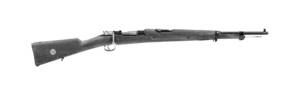

Gevär m/38

Konstruktör: Peter-Paul Mauser, Tyskland
Tillverkare: bl a Carl Gustafs Stads Gevärsfaktor, Eskilstuna ochHusquarna Vapenfabriks AB
System: 5-skotts repetergevär med mausermekanism
Kaliber: 6,5 mm
Längd: 1120 mm
Vikt: 3,8 kg (oladdat)
Riktmedel: Korn och SM-sikte eller kurvsikte för 100 - 600 m
Magasin: 5-skotts fast magasin i stocken
Eldhastighet: ca 6 skott/minut (praktik eldhastighet)
Ammunition: 6,5 mm ptr m/94 och senare även 6,5 mm ptr m/41
.
.
.
.
.